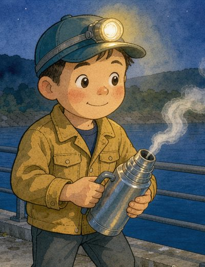
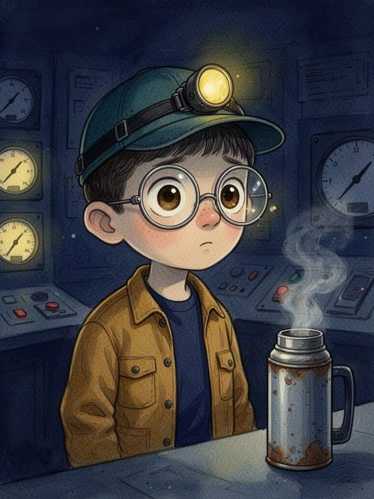
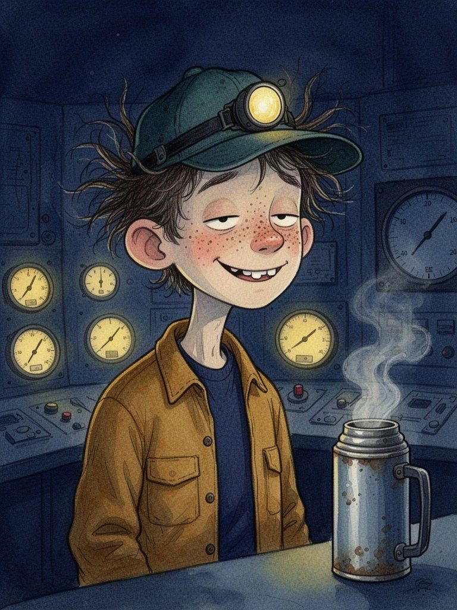
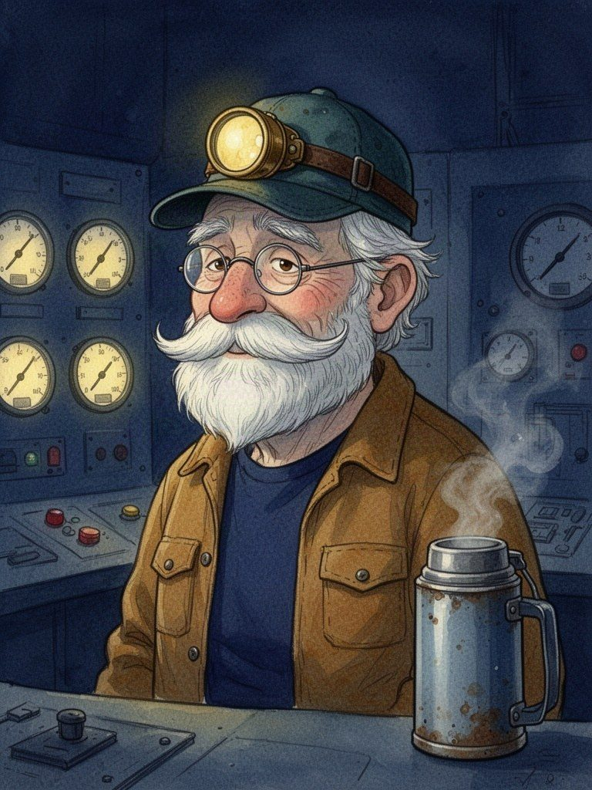
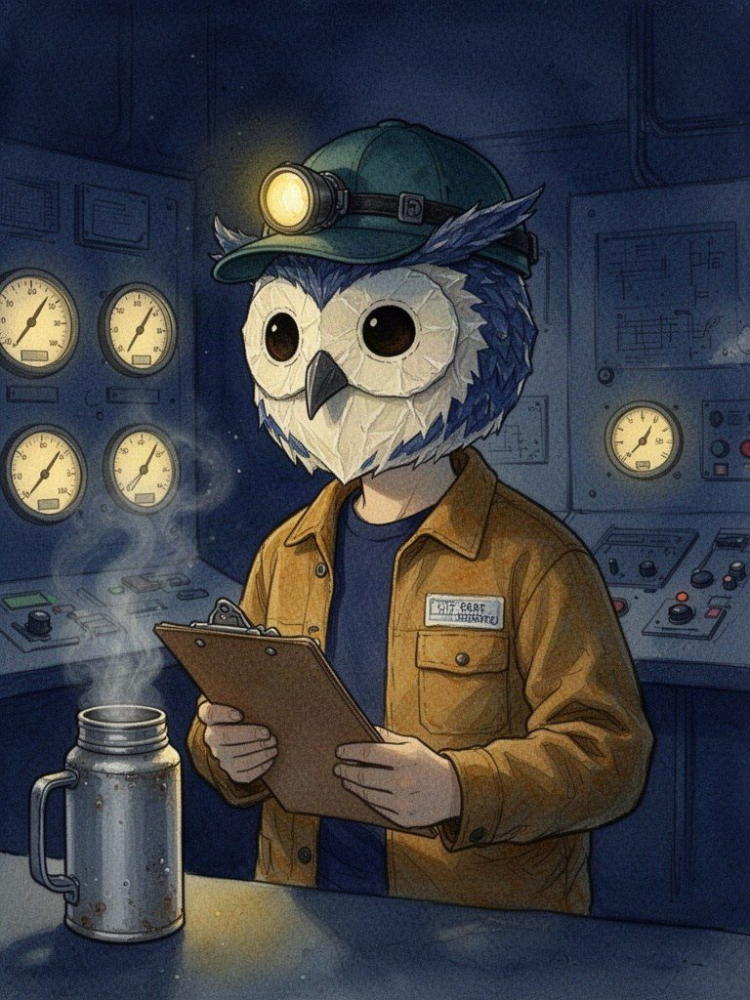
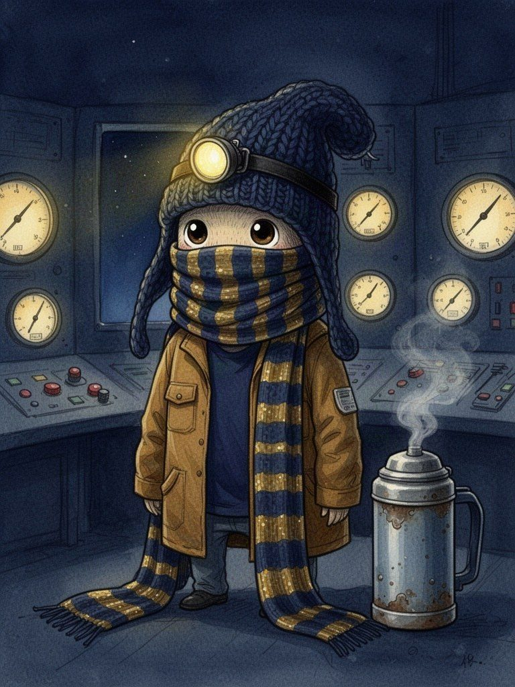
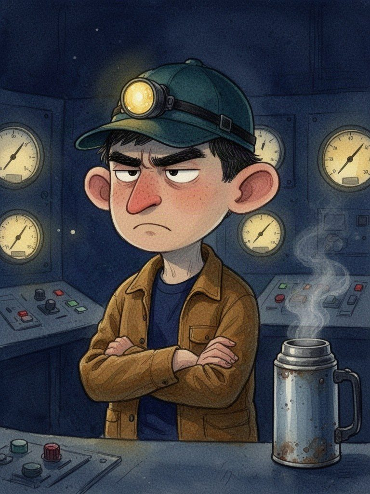

How It Holds EP01 オペレーター（主役）の顔 6案
同じトーン（絵本の水彩・夜の青×金）、同じ上着と魔法瓶で、顔の個性だけを変えました。上半身の一枚絵。
お金：6.33円（8回生成。うち1回は受信が途中で切れて画像なし、1回はBの撮り直し）。見る用ページへ戻る
今の顔（比較用・本編の参照画像から切り出し）

今 丸顔・大きな目・帽子とヘッドランプ
6案

A 大きな丸メガネ
レンズにヘッドランプの金色が二つ映る。目が拡大されてフクロウのよう。まじめで口が小さい。

B そばかすと寝ぐせ
帽子から寝ぐせが四方に飛び出す。半分閉じた眠そうな目と、すきっ歯のにやり顔。夜勤の脱力感。

C 年配の技師
白いセイウチひげ、太い白眉、半月メガネ。疲れているけれど穏やか。「何十年も練習してきた人」の説得力。

D フクロウの仮面
顔は手作りの張り子のフクロウの仮面。表情が見えない分、シュールさが一番強い。

E 帽子と長いマフラー
ずり落ちたニット帽と、床まで垂れる紺×金のしましまマフラー。見えるのは丸い目だけ。小ささとかわいさ。

F 太眉の仏頂面
太くつり上がった眉、とがった鼻、大きな耳、腕組み。いつも不機嫌そうなのに仕事は完璧、という笑い。
気になった点：どの案も背景の計器盤に小さな赤いランプが少し入っています（本編の「赤は電線だけ」の決まりに外れる。採用時は描き直しで消せます）。モデル fal-ai/flux-2/flash（文字だけで生成・768×1024）。家計簿の案件名「HowItHolds EP01 顔の案」。